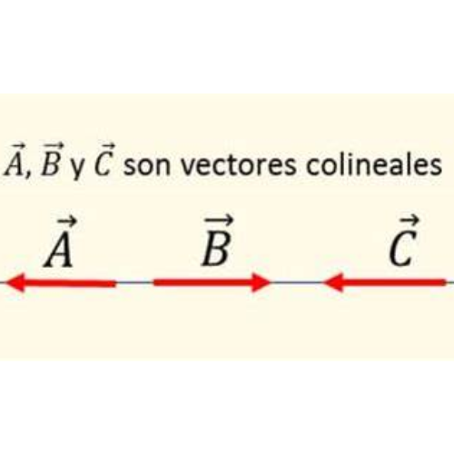

VECTORES
Vector
En física y matemáticas, un vector es un segmento de una línea recta, dotado de un sentido,
es decir, orientado dentro de un plano euclidiano bidimensional o tridimensional. O lo que es lo
mismo: un vector es un elemento en un espacio vectorial.
En física un vector se define como un ente matemático, gráficamente se representa mediante
un segmento de recta que posee una orientación definida en el espacio, un vector en física se utiliza
para representar los fenómenos como: el movimiento, la fuerza, la aceleración, el peso de un cuerpo,
la dirección de muchos fenómenos físicos, entre otros.
Características de un vector
Dirección:
Definida como la recta sobre la cual se traza el vector, continuada infinitamente en el espacio.
Módulo o amplitud:
La longitud gráfica que equivale, dentro de un plano, a la magnitud del vector expresada numéricamente.
Sentido:
Representado por la punta de la flecha que gráficamente representa al vector, indica el lugar geométrico hacia el cual se dirige el vector.
Punto de aplicación:
Correspondiente al lugar o punto geométrico en donde inicia el vector gráficamente.

Operaciones
con VECTORES
También conocido como operaciones vectoriales; los vectores están definidos matemáticamente,
poseen componentes rectangulares, y pueden estar representados en un plano o espacio tridimensional.
Veamos a continuación que tipo de operaciones admiten los vectores.
En la actualidad, en cambio, la física es una de las disciplinas que más contribuye con el cambio del
paradigma científico,
industrial y tecnológico.
Operación de adición y sustracción de vectores.
dos o más vectores se pueden sumar o restar para obtener un vector suma resultante o vector
diferencia respectivamente.
Multiplicación de vectores por un escalar
un vector puede ser multiplicado por un número real.
Producto interno o producto punto de vectores
Esta operación se puede realizar con dos o más vectores y el resultado es un número (escalar)
Producto vectorial o producto cruz de vectores
esta operación se realiza entre dos vectores o más y el resultado es otro vector.
Aplicaciones de los vectores
En matemáticas
Las materias en las que se hace un estudio y aplicación bastante a menudo de los vectores, son en el estudio
del álgebra lineal, las ecuaciones diferenciales, análisis matemático, cálculo, etc.
Programación e informática
Los vectores en programación pueden ser empleados como contenedores de datos, como arreglos que contienen un valor
determinado que servirá para realizar o completar las instrucciones que ejecute un determinado programa
Los vectores en la vida cotidiana
También están en nuestro día a día abstractamente, por ejemplo nuestros movimientos pueden ser representados por vectores, pues tienen una dirección, un sentido y hasta una dimensión; de la misma forma los vehículos, o cualquier objeto que se mueve.
La fuerza de las actividades físicas puede ser representada y calculados mediante la operación y cálculo vectorial.
Ahora que sabes lo que es un vector en física, puedes pasar ha aprender más sobre ellos.

DATOS CURIOSOS DE LOS VECTORES
Vectores en la Naturaleza: Muchos fenómenos naturales pueden describirse mediante vectores. Por ejemplo, la velocidad y la aceleración de un objeto, la fuerza ejercida sobre un cuerpo, el campo magnético, entre otros.
Comentarios
-
anonimous
La Teoría del Big Bang -
anonimousss2
La Teoría de la Relatividad General
También te puede interesar
Fisica Moderna Ciencias Naturales Mecanica cuantica Ramas de la Fisica Termodinamica Biofisica Cinematica Ramas de la Fisica Movimientos Mecanica en Fisica Energia en Fisica Geografia Fisica
Tipos de vectores
Vectores libres
Aquellos que no poseen un punto de aplicación particular.
Vectores deslizantes
Aquellos cuyo punto de aplicación puede ser uno cualquiera a lo largo de la recta de aplicación.
Vectores fijos o ligados
Aquellos que poseen un único y determinado punto de aplicación.
Vectores angulares o concurrentes
Aquellos que forman ángulos respecto de sus líneas de acción o direcciones.
Vectores opuestos
Aquellos que poseen igual magnitud pero sentido contrario.

Vectores colineales
Aquellos que comparten recta de acción.
Vectores paralelos
Aquellos cuyas líneas de acción sean, justamente, paralelas.
Vectores coplanarios
Aquellos cuyas rectas de acción estén situadas en un mismo plano.
Compartir
¿Tienes alguna teoria?
Dejamelo en los comentarios